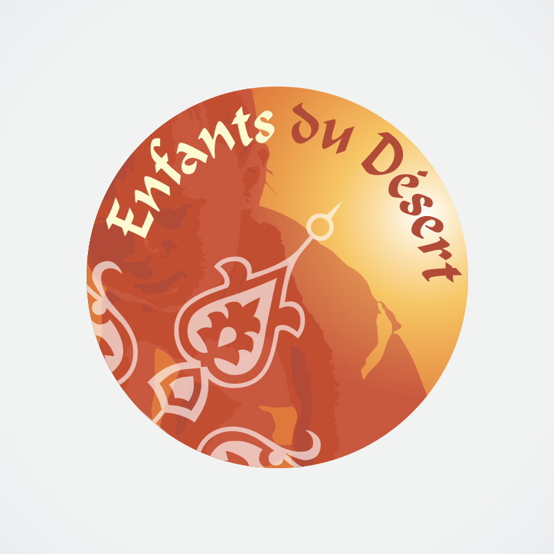

Le raid en quelques mots
Le plus grand raid étudiant d'Europe
Créé en 1997, le 4L Trophy rassemble chaque année plus de 1 300 équipages. Le principe est simple mais redoutable : parcourir 6 000 kilomètres entre la France et le Maroc, exclusivement en Renault 4L, sans autre aide qu'une carte et une boussole.
L'objectif n'est pas d'aller le plus vite, mais de relier chaque étape en parcourant le moins de kilomètres possible — un vrai défi d'orientation et d'endurance mécanique, doublé d'une mission solidaire.
Notre mission solidaire
Plus qu'une course, une cause
Nous roulons avec l'association Enfants du Désert, qui œuvre pour l'éducation des enfants du Sud marocain. Chaque kilomètre parcouru sert aussi à financer et acheminer des fournitures scolaires jusqu'aux villages les plus isolés.


Association partenaire
Fournitures scolaires acheminées directement aux enfants du Sud marocain à l'arrivée du raid.